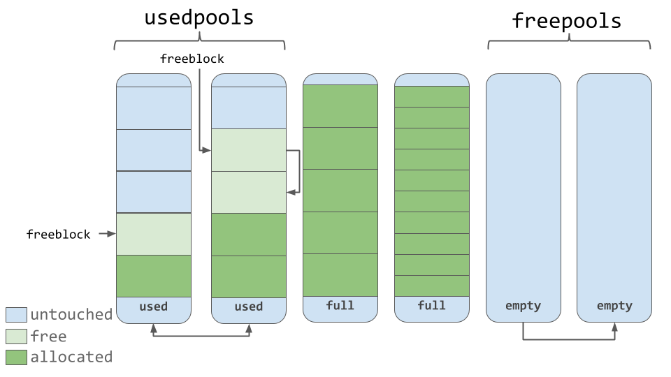

Utilized C programming and parallel programming along with multi-threading techniques to generate Mandelbrot images, minimizing the time required for image creation.
The image is divided into separate bands, with each thread working on a distinct section for optimized performance. A command line argument
-n is included to specify the number of threads, allowing users to tailor the computation process for their needs.
Key Features:
- Fast computation using multiple threads with parallel programming and multi-threading.
- Customizable thread count with
-n argument.
- Each thread works on separate image bands for optimal efficiency.

This project demonstrates the implementation of Johnson's Rule, a simple yet effective greedy algorithm to optimally solve the two-stage production (flow) scheduling problem. By minimizing production time and ensuring efficient workflow, Johnson's Rule provides an ideal solution for scheduling in manufacturing and other production environments.
Key Features:
- Uses a greedy method to find optimal scheduling sequences for two-stage production systems.
- Minimizes production time and ensures efficient utilization of resources.
- Offers a systematic step-by-step process to arrange tasks based on processing times.
Perfect for solving real-world scheduling problems in industries, Johnson's Rule provides clarity and efficiency by sorting tasks in an optimal sequence based on specific processing times at two distinct workstations.

Dive into the world of FAT-32 file systems with this project, which enables editing and interpreting a 32-bit file system image using Linux shell commands. The program includes functionality for opening and managing FAT-32 file system images, retrieving file information, and directory navigation with comprehensive commands for file and data manipulation.
Key Features:
- Shell-based file system editing and management in Linux.
- Supports commands like
open, info, ls, read, cd, del, and undel.
- Provides detailed file system information in hexadecimal and base-10 formats.
- Handles relative and absolute path navigation.
- Retrieves files from FAT-32 images to the current working directory.
How to Get Started:
- Compile the program:
gcc mfs.c
- Run the executable:
./a.out
- Open a FAT-32 image and start managing your file system efficiently.
Email for access to disk image (FAT32.img).

This project implements a memory arena allocator written in C, utilizing strategies such as First Fit and Next Fit to efficiently allocate memory in Linux systems. It manages memory through a linked list and provides key features for tracking and coalescing memory segments.
Key Features:
- Supports memory allocation algorithms: First Fit, Next Fit, Best Fit, and Worst Fit.
- Tracks memory segments with a single or doubly linked list.
- Efficiently handles allocation, freeing, and coalescing of memory blocks.
- Includes an API for initializing, allocating, freeing, and destroying memory arenas.
How to Run:
- Clean and compile:
make clean and make
- Run the program:
./unit_test
- Initialize memory with a desired size and algorithm:
mavalloc_init(65535, FIRST_FIT)
Designed for applications with stringent performance requirements, this project showcases how large memory pools are allocated on startup to avoid frequent system calls. Applications like games, aircraft systems, and spacecraft can benefit significantly from this implementation.
MavShell is a lightweight and customized shell program that functions similarly to popular shells like Bourne Shell (bash), C-Shell (csh), and Korn Shell (ksh). Written in C, MavShell accepts user commands, forks child processes, and executes those commands, supporting process management and basic scripting functionalities.
Key Features:
- Supports up to 10 command-line parameters for each input.
- Commands include basic utilities like
ls, cd, mkdir, and process history commands.
- Tracks and displays the last 15 commands or processes executed by the user.
- Ability to re-run past commands using
!n, where n refers to the command index in history.
- Handles process creation and execution efficiently using
fork and exec.
- Interactive navigation with
cd for directory traversal, including relative paths (e.g., cd ..).
Commands to Run:
- Compile:
gcc msh.c
- Run:
./a.out or ./msh.c
With robust error handling and process management capabilities, MavShell is designed to provide a simple yet powerful interface for users to execute commands and manage processes in C.

This project demonstrates the implementation of order-preserving Huffman coding, utilizing the dynamic programming formulation. It efficiently compresses data by assigning variable-length bit codes to symbols based on their probabilities, while maintaining the input order of the character set.
Key Features:
- Generates the cost matrix to determine the most efficient Huffman code tree.
- Constructs an optimal order-preserving Huffman code tree for the given symbols.
- Outputs the bit code assigned to each symbol and calculates the expected bits per symbol based on the input probabilities.
How to Use:
- Compile the code:
gcc code3.c
- Run the program:
./a.out lab3fall21.a.dat
- Input: A positive integer
n and a sequence of n doubles representing the probabilities of symbols in an ordered character set.
- Output: Cost matrix, Huffman code tree, bit codes for symbols, and expected bits per symbol.
Ideal for applications requiring efficient data compression, this implementation showcases the power of dynamic programming in solving optimization problems.
C program that uses the “pebble game” technique to test if an input graph is minimally rigid (in two dimensions).
The first line of the input is n, the number of vertices (≤ 100). The next 2n – 3 lines define undirected edges.
Input lines are echoed to output before processing. The final output indicates if the graph is Laman or if the last edge is
redundant, along with the rigid subgraph. If a pebble is moved, the path of vertices is printed.
Key Features:
- Reads graph input from a
.dat file (number of vertices + edge list)
- Constructs an undirected graph using adjacency lists for efficient traversal
- Assigns two pebbles to each vertex and simulates the pebble game algorithm
- Checks if the graph is Laman minimally rigid or contains redundant edges
- Prints edge processing feedback step-by-step
- Manages dynamic memory for all vertices and edges during runtime
How to Run:
- Compile the program:
gcc -o pebble_game graph_reachability.c
- Run the executable:
./pebble_game a.dat
- Ensure
a.dat contains the number of vertices followed by edge pairs
CONCEPTS USED
- Graph Theory (adjacency lists, undirected edges)
- Pebble Game Algorithm
- Dynamic Memory Allocation
- File I/O and command-line parsing in C